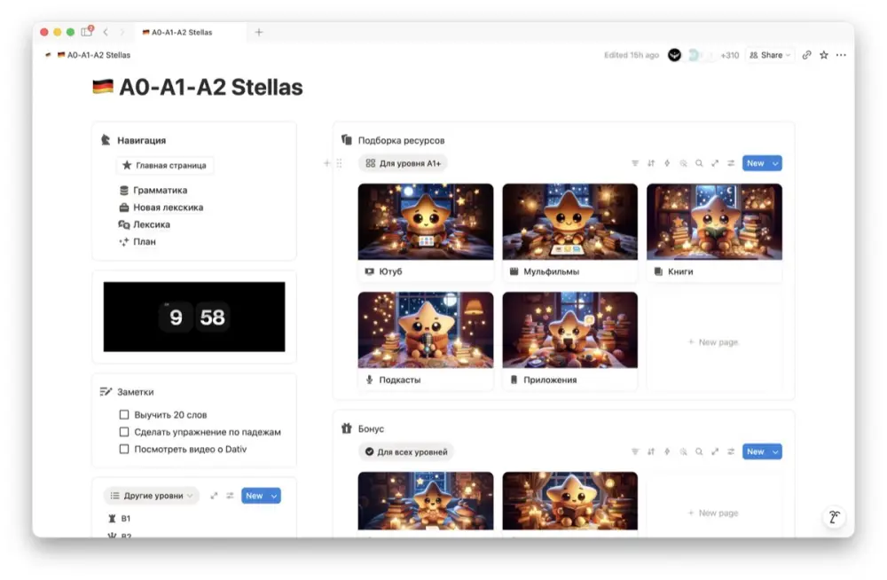
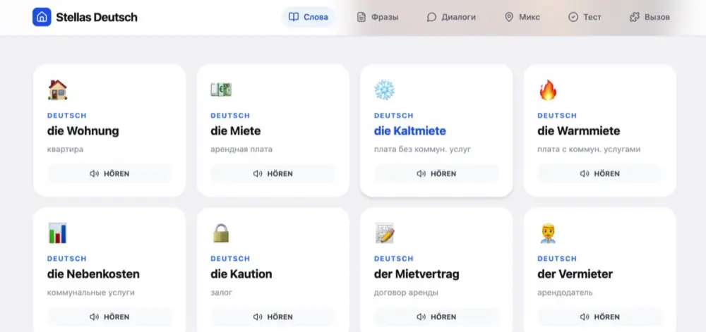
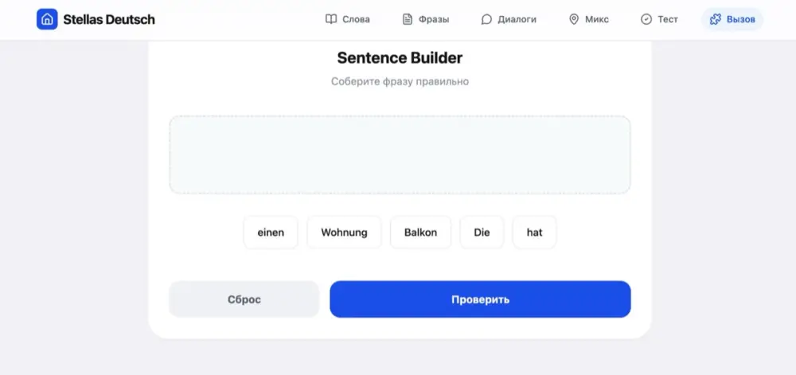
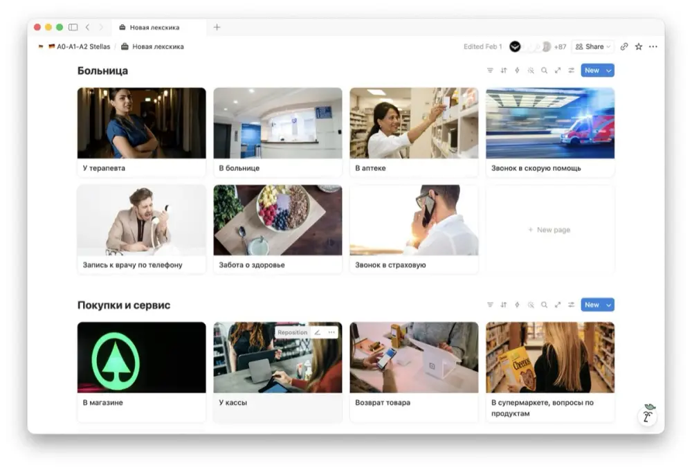
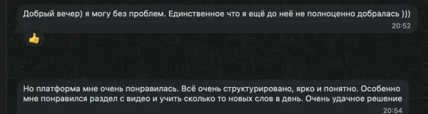
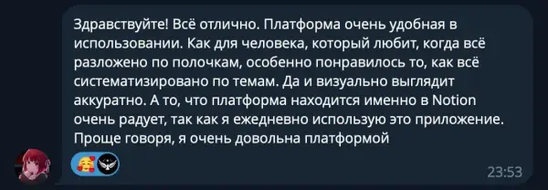
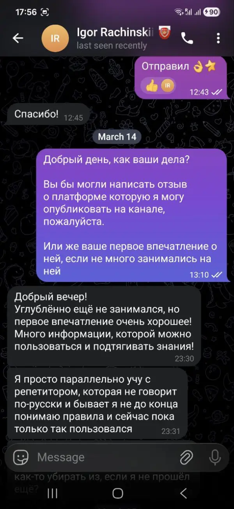
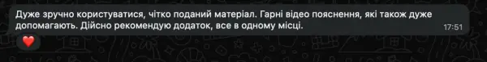
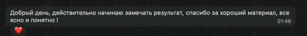

Nur Bahnhof
буквально: понимаю только вокзал
Немецкие
идиомы
Семь
штук
Уровень
B1–B2
Гайд
Stellas
(Ich verstehe nur Bahnhof)
Семь фраз, которые не переводятся. И семь историй, после которых их уже не забыть. С озвучкой, сценами и тестом в конце.
Я переехал в Австрию. Немецкий у меня был B1. По бумажке.
Первый день на работе. Кухня. Кофемашина.
Коллега Маркус рассказывает про новый проект. Десять минут рассказывает. Я киваю.
Маркус спрашивает, alles klar?
Говорю, ja, klar.
Маркус вздыхает. Говорит, ehrlich gesagt, ich verstehe nur Bahnhof.
Я думаю, при чём тут вокзал. Мы же в офисе.
Вечером загуглил. Маркус сам не понял свой проект.
Нас таких было двое.
(Idiom diem)
Слова ты знаешь. Смысл нет. Идиома это шифр. Ключ к шифру не словарь, а ситуация. Поэтому здесь сначала история, потом правило.
Как это работает(Как это работает)
Буквально ≠ смысл
…
ерунда…
Переводишь по словам и получаешь абсурд. Идиому учат целиком, как одно слово.
буквально: понимаю только вокзал
буквально: это не моё пиво
буквально: иметь помидоры на глазах
буквально: иметь свинью
буквально: там отплясывает медведь
буквально: сейчас речь о колбасе
буквально: жать большие пальцы
Когда собеседник говорит, а у тебя в голове только табло с поездами. Честная фраза. Спасает чаще, чем кажется.
Буквально: понимаю только вокзал.
По смыслу: ничего не понимаю.
По одной из версий, после Первой мировой солдаты устали от войны. О чём бы с ними ни говорили, в голове было одно: вокзал и поезд домой.
(История)
Звоню в магистрат. Нужна прописка.
На том конце женщина. Говорит на венском. Быстро.
Говорю, langsamer, bitte.
Она говорит медленнее. Тоже на венском.
Говорю, Entschuldigung, ich verstehe nur Bahnhof.
Пауза. Она смеётся.
Переходит на нормальный немецкий. Записывает меня на вторник.
Одна идиома сработала лучше, чем мой сертификат B1.
(Сцена 01)
Мозг уехал на вокзал
Слова есть. Смысла нет. В голове табло.
Чужая проблема пытается переехать к тебе. Ты вежливо, но твёрдо её возвращаешь.
Буквально: это не моё пиво.
По смыслу: не моё дело.
Откуда пиво, точно никто не знает. Зато в Германии все понимают: своё пиво ты пьёшь сам, чужое не трогаешь.
(История)
Живу в общаге. Холодильник общий.
Кто-то съел чужой йогурт. Чат на сорок человек. Третий день расследование.
Скриншоты. Голосовые. Фото пустой полки.
Меня тегают. Спрашивают, видел ли я что-нибудь.
Пишу, das ist nicht mein Bier.
Через минуту ответ. А пиво на второй полке чьё?
Пиво было моё.
(Сцена 02)
Верни проблему владельцу
Коллега двигает к тебе свою проблему.
Вещь лежит прямо перед тобой. Ты её не видишь. Немцы считают, что виноваты помидоры.
Буквально: иметь помидоры на глазах.
По смыслу: не видеть очевидного.
По одной из версий, от усталости глаза красные и опухшие. Как помидоры. Сквозь такие ничего не видно.
(История)
Ищу телефон. Хлопаю по карманам.
Смотрю под диваном. Под кроватью. В холодильнике. Мало ли.
Звоню себе с ноутбука. Тишина. Беззвучный режим.
На кухню заходит соседка Лена. Смотрит на меня.
Говорит, hast du Tomaten auf den Augen?
Телефон у меня в руке. Я им светил под диван.
(Сцена 03)
Ключи прямо перед тобой
Ищешь ключи. Смотришь везде.
Свинья в Германии символ удачи. На Новый год дарят марципановых свинок. Серьёзно.
Буквально: иметь свинью.
По смыслу: повезло.
По одной из версий, на средневековых турнирах последний получал поросёнка. Проиграл, но с мясом. Повезло.
(История)
Еду в Грац. Опаздываю на поезд на семь минут.
Бегу по перрону с чемоданом. Думаю, всё. Следующий через час.
Поезд стоит.
Он тоже опаздывает. На двенадцать минут.
Кондуктор смотрит на меня. На чемодан. На моё лицо.
Говорит, Schwein gehabt.
Свиньёй меня назвали первый раз в жизни. И это был комплимент.
(Сцена 04)
Три свиньи подряд
Крутим барабаны.
Если медведь пошёл танцевать, значит вечеринка удалась. Говорят про место или событие.
Буквально: там отплясывает медведь.
По смыслу: там будет жарко и весело.
На ярмарках раньше водили дрессированных медведей. Где танцует медведь, там толпа, музыка и шум.
(История)
Одногруппница зовёт на день рождения.
Говорит, komm unbedingt, da steppt der Bär.
Прихожу. Восемь человек. Настолки. Чай с имбирём.
В десять все расходятся. Завтра пары.
Медведь не пришёл.
Медведь, видимо, тоже знал про чай.
(Сцена 05)
Медведь выходит на танцпол
Чем громче, тем активнее медведь.
Решающий момент. Финал, экзамен, последний пенальти. Всё или ничего.
Буквально: сейчас речь о колбасе.
По смыслу: сейчас всё решится.
На деревенских праздниках победитель соревнований получал колбасу. Кто последний бежит, тот бежит за колбасой.
(История)
Устный экзамен. Goethe B1.
Мой партнёр по диалогу парень из Сирии. Двадцать минут ждём в коридоре. Молчим.
Экзаменатор открывает дверь.
Парень поворачивается ко мне. Говорит, jetzt geht’s um die Wurst.
Я не знаю, что это значит. Но киваю.
Сдали оба.
Колбасу не дали.
(Сцена 06)
Финал. Три. Два. Один.
Решающий момент. Колбаса на кону.
Немцы не держат кулачки. Они прячут большой палец в кулак и сжимают. Смысл тот же: удачи тебе.
Буквально: жать большие пальцы.
По смыслу: держать кулачки.
Версий много, доказанной ни одной. Самая красивая: большой палец прячут, чтобы не сглазить.
(История)
Мама звонит из Алматы перед экзаменом.
Говорит, держу за тебя кулачки.
Рассказываю соседу-австрийцу. Он не понимает. Какие кулачки?
Показывает кулак. Большой палец внутри.
Говорит, bei uns drückt man die Daumen.
Мама держит кулачки. Австриец жмёт пальцы.
Экзамен я сдал. Кто сработал, до сих пор непонятно.
(Сцена 07)
Где жмут пальцы
Палец внутри. Жмёшь. Удача приходит.
Герои&персонажи
(Wörterbuch)
Семь слов
из семи идиом
Чёрный это der. Красный это die. Белый это das. Нажми на плитку, она скажет слово с артиклем.
(Русский аналог)
Собери пары
Нажми немецкую фразу, потом русский аналог.
0 из 7
Проверка
(Повесь на холодильник)
Schwein
gehabt
Nicht
mein Bier
Шпаргалка
(Последняя история)
Корпоратив. Двадцать австрийцев. И я.
Начальник рассказывает историю. Все смеются.
Я тоже смеюсь. На секунду позже.
Начальник смотрит на меня. Говорит, du hast es nicht verstanden, oder?
Говорю, nur Bahnhof.
Все смеются ещё раз. В этот раз я понял шутку.
Она была про меня.
Грамматику ты учил. А люди говорят идиомами, сокращениями, шутками. Этого нет в учебнике.
На платформе лексика из реальной жизни: работа, врач, Jobcenter, магазин, звонки. Фразы, которые говорят люди, а не дикторы.
Ты знаешь ответ. Пока собираешь предложение, тема уже другая. И это замечают.
Интерактивные гайды в Gemini с ИИ-собеседником. Пишешь на немецком, он отвечает в образе. Строгий, дружелюбный, сложный. Практика без стыда перед живым человеком.
ВНЖ, работа, университет. Везде нужен сертификат. И у сертификата есть дедлайн.
Раздел «Экзамены»: Goethe, telc, DTZ, ÖSD, TestDaF. Плюс трекер в Notion, чтобы видеть, сколько осталось.
Как это
выглядит
(Видео)

Всё в одном месте

Работа и госорганы

Слова с озвучкой

Собери предложение
Трекер прогресса

Больница и покупки
Всё в одной коробкеПлатформа сделана в Notion. Скачал приложение и учишь в самолёте, в поезде, без интернета.
Что пишут





Касса
(Цены)
Удобнее через WhatsApp?Напиши, какую платформу хочешь. Оплату и доступ оформим прямо в чате.
Купить через WhatsAppОдин платёж. Без подписки. Все будущие обновления для купивших бесплатно.
Маркус, кстати, до сих пор говорит ich verstehe nur Bahnhof.
Я уже нет.
Этот гайд ты прочитал за десять минут. Таких на платформе триста.